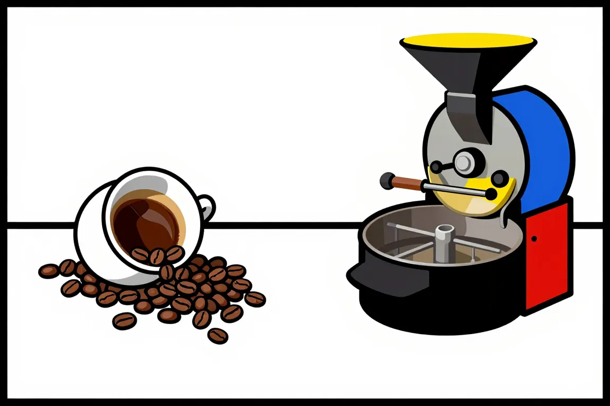

Vannrette og loddrette svarte linjer, flate felt i rødt, gult og blått, og hvitt rom. Stilen kom fra den nederlandske gruppen rundt Mondrian og Van Doesburg og reduserer formen til grunndelene.

Kjerneidé
Reduser formen til den rette linjen og primærfargen, så trer en universell, harmonisk orden frem.
Designprinsipper
Bygg hver layout av bare rette vannrette og loddrette linjer; ingen andre vinkler enn 0° eller 90°.
Tegn svarte linjer på 6px til 12px mellom alle fargefelt.
Bruk bare rød (#D8261C), gul (#F4C719), blå (#1D4FA8), svart, hvit og en lys grå (#E8E8E4).
Fyll 60 % til 75 % av siden med hvitt; fargefeltene dekker høyst 25 %, og ett stort felt får mest vekt.
Plasser fargefeltene utenfor midten og hold dem ulike i størrelse; forholdet mellom to nabofelt er 1:1.6 til 1:2.4.
Sett tekst i en geometrisk sans serif på 16px; la overskrifter stå i et hvitt felt med små bokstaver.
La linjene løpe til kanten av visningsområdet og kuttes ved grensen.